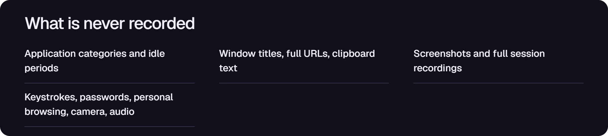
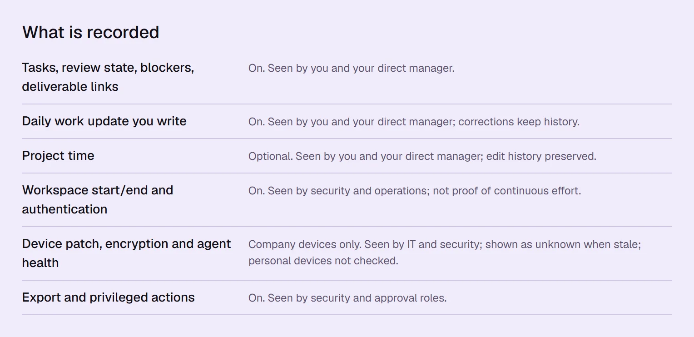
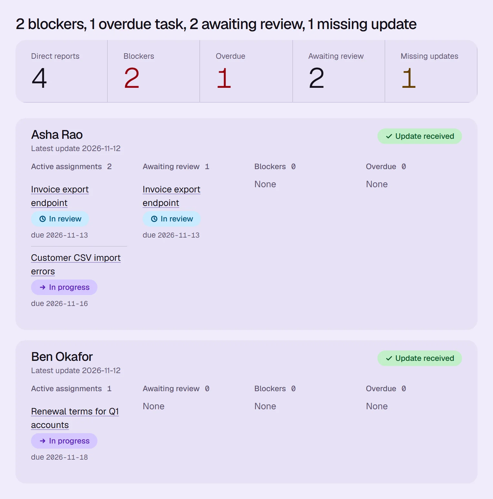
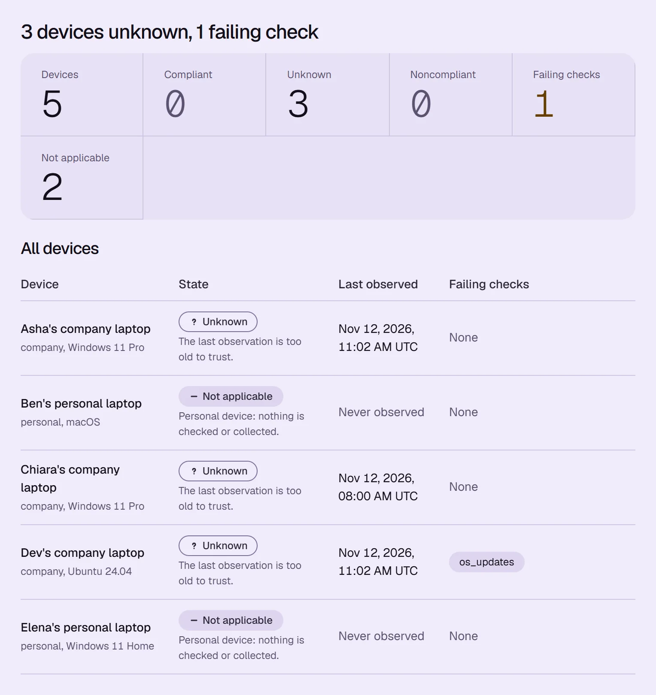
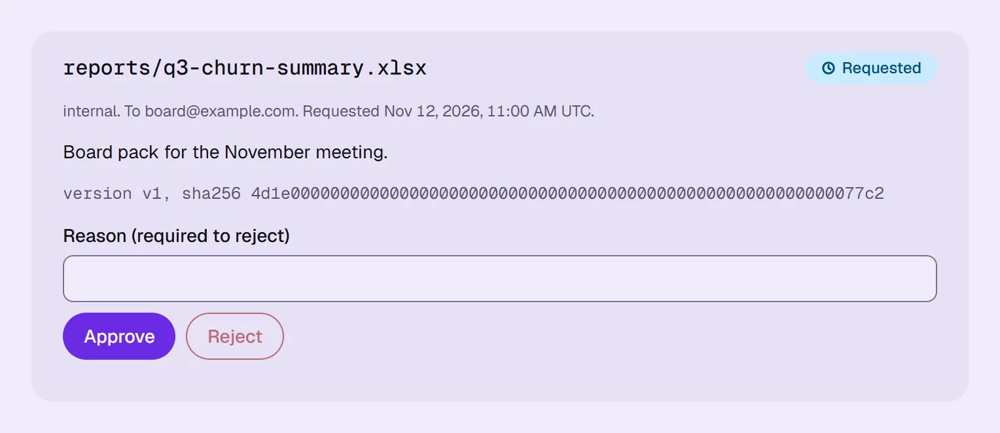
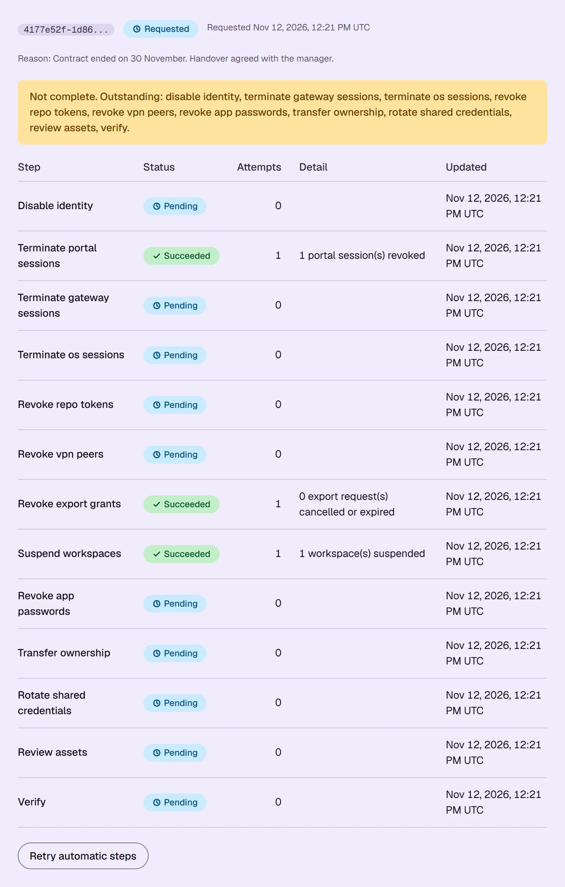

tracking that says what it never records
Work summaries, export approvals and offboarding for a team of five, self-hosted.

five promises, each on a screen
Captured from the running portal. Sample data.
six things recorded, each with who sees it

counts of blockers, never a score

unknown stays unknown

the requester cannot approve it

three of thirteen steps done, so the job stays open

five parts, all on your servers
The portal is tested. The rest is written and validated offline, not yet run on real hardware.
| part | job | state |
|---|---|---|
| Keycloak | sign-in with MFA | not yet run |
| Guacamole and xrdp | an isolated Linux workspace each, in the browser | not yet run |
| Wazuh | security events from workspaces and laptops | not yet run |
| restic | encrypted backups to separate storage | not yet run |
| the portal | summaries, notice, approvals, offboarding, audit | tested |
what it will not do, and what it has not done yet
- does it log keystrokes or screenshots?
- No keylogging, screenshots, camera or clipboard capture.
- can I approve my own export?
- No. A different person approves, against the checksum.
- does it install anything on my own computer?
- Not by default. Personal laptops use a browser workspace.
- when is offboarding done?
- When every step is verified. A personal device is never wiped.
- has it run on real hardware?
- Only the portal: 218 API tests, plus web tests. The lab and Ansible files are not yet run.
three shells, no Docker
Needs Python 3.13 with uv, Node 22 and PostgreSQL 16 or 17.
git clone https://github.com/anshnt/tracking
cd tracking/apps/api
export PORTAL_ENV=development PORTAL_DEV_AUTH=1
export PUBLIC_ORIGIN=http://localhost:5173
uv sync
uv run alembic upgrade head
uv run uvicorn portal.main:app --port 8000uv run python -m portal.worker
cd ../web && npm ci && npm run dev